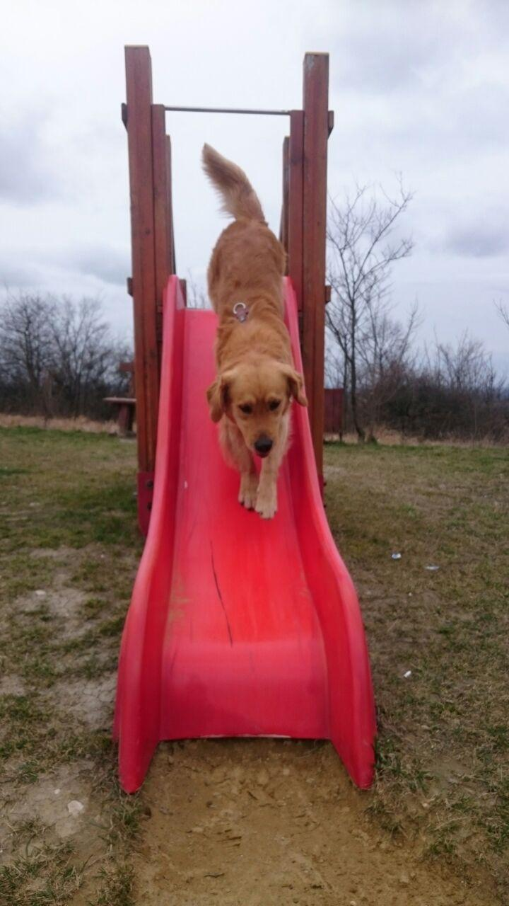
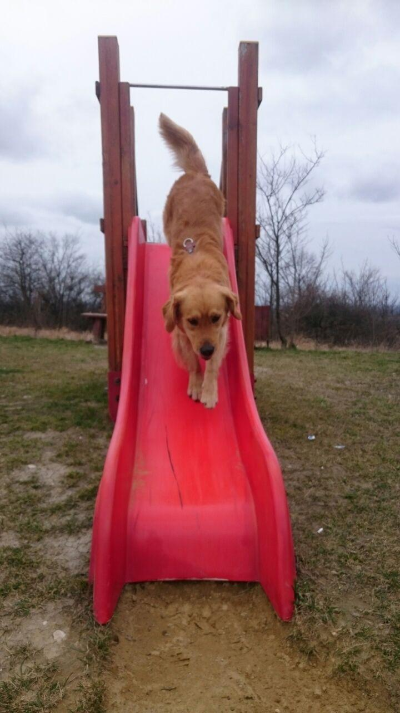
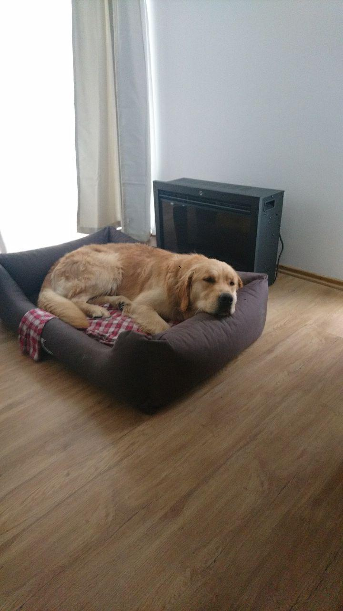
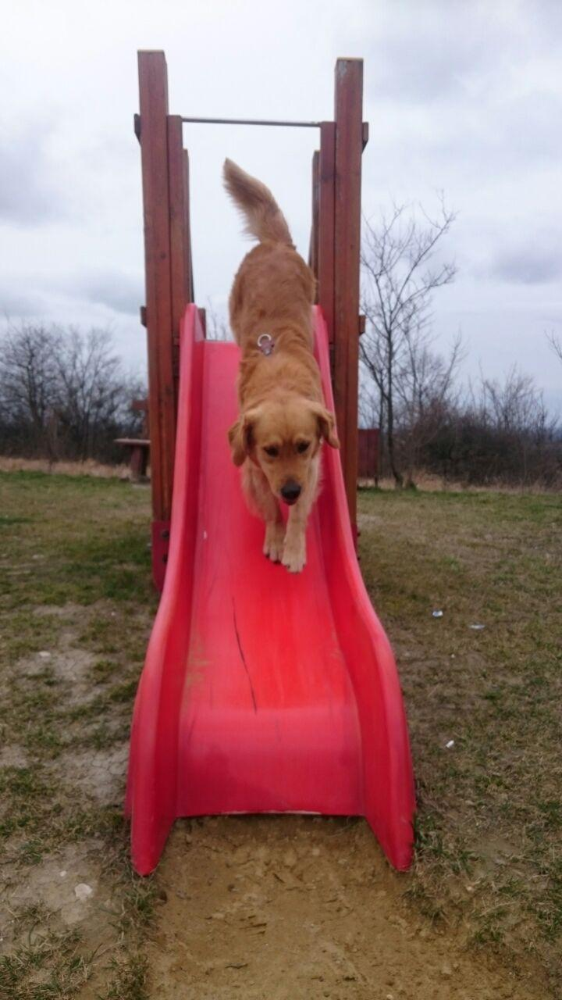
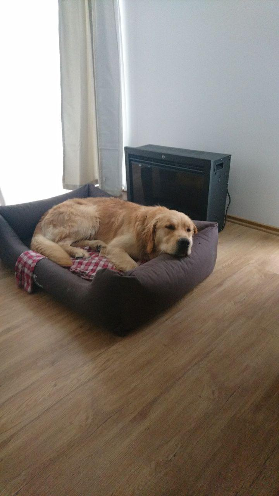
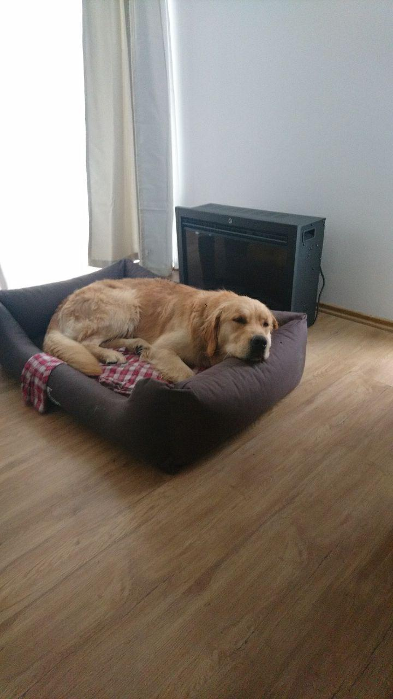
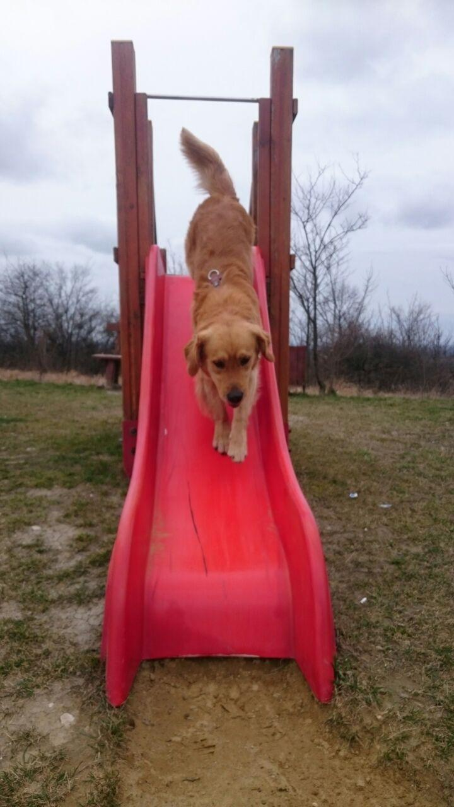
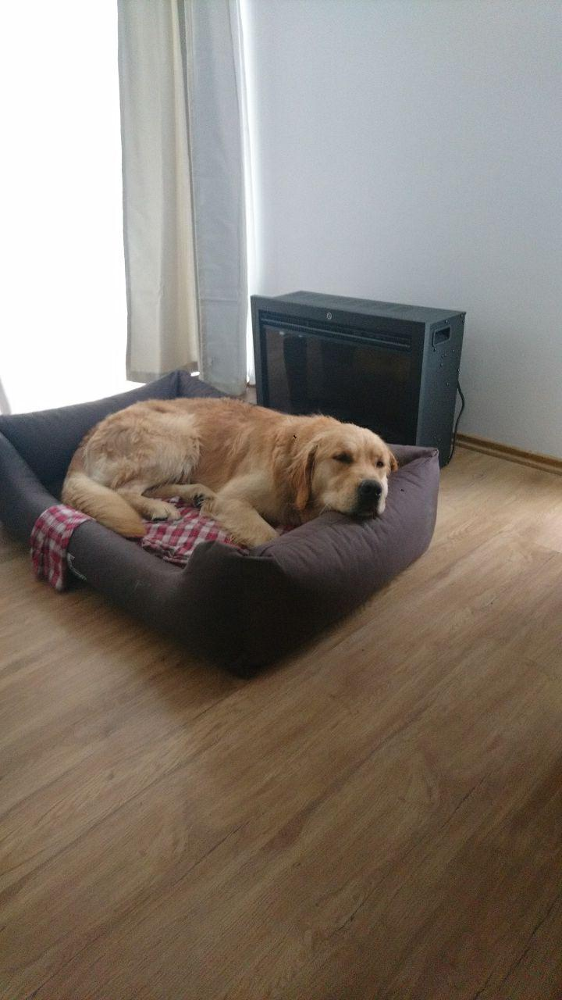

 





Frodo is a Golden Retriever born in 2017 on a beautiful day. Not only the world gained a new puppy, but somewhere a couple got a new family member, even they have not known it yet.
Frodo is getting 3 years old in July, so we are preparing a huge doggy party for him to spend this special day with his best friends. Serving dog friendly food, a lot of toys, a pool full of water, snackos and cattos, so unlimited joy will be on the table.
He has a bro called Figo, who is a black labrador retriever.